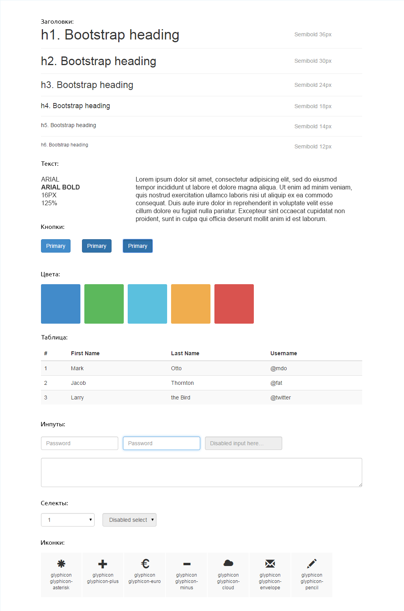

Шрифты
-
-
Мы имеем 6 уровней заголовков (h1,h2...h6). По умолчанию h1 это имя страницы, на главной это обычно имя Компании/события/акции/сео трюк.
Хотелось бы чтобы было ограничение по заголовкам, чтобы они использовались повторно. Плохо когда на главной одни заголовки по стилю, в трех блоках разные заголовки, а на внутренних другие. Для контента вполне приемлемы отдельные заголовки, т.к. его должны прочитать.
-
-
Я лично против воровства цифрового контента, т.к. сам его создаю. Если шрифт приобретен/будет приобретен, то положите его в папочку рядом с дизайном. Зачастую ворованные шрифты идут бандлами на торрентах и это очень затрудняет поиски, учитывая что недалеко имеется файл шрифта.
-
-
Надпись, для которой использован особый шрифт и она не меняется, не считать.
-
-
Очевидное - может добавится пункт в горизонтальном меню.
Не очевидное - шрифты в разных ОС и в разных браузерах рендерятся по разному, в каком-то надпись может стать жирнее, поэтому недопустимо, чтобы размер кнопки был впритык.
Разные языки так же в этом пункте.
-
-
К сожалению браузеры рендерят шрифты только в целых значениях. Тем более что в разных ОС и браузерах отличия все равно будут. В ководстве указанны только относительные размеры кегля.
-
-
Возможна ситуация в которой пользователь не сможет получить кастомный шрифт. Для этого надо дополнительно указывать на какой шрифт заменять, если нет доступа к первому. Можно отдать все на волю ОС и браузера и указать только семейство(sans-serif, serif, monospace, cursive, fantasy).
-
-
Имеется ввиду не все линии должны быть 24px, а к примеру 120%. Разная высота линий в разных блоках и вуаля, макет уже смотрится по другому, целевое действие уже не на первом экране.
Для справки:
-
Во всех браузерах стандартным шрифтом является 16px.
Есть относительная единица измерения em, она задается относительна размера шрифта, т.е. При 16px, 1em будет равен 16px. Таким образом можно удобно масштабировать целый блок или даже всю страница изменив значения шрифта в блоке родителе.
Использование базового значения шрифта и относительной единицы измерения em позволяет гарантировать читабельность контента на любых устройствах до и после Джобса.
Макет
-
-
Здесь описано почему
-
-
Просто удобно
-
-
Найду и сверстаю!
-
-
Про группировку описано в статейке, пункт 3
-
-
Экраны становятся все более четкими, пиксели плотнее и на блестящем айфончике пнг 48*48 выглядит уже не так хорошо, хотя вокруг все сверкает и радует Стива. Поэтому монохромные изображения, элементы, в общем все что есть вектор, лучше и оставить вектором.
-
(Отдельная папка в макете или отдельный файл)
-
Позволяет удостовериться что для всех кнопок/ссылок есть состояния, чтобы избежать мелких вопросов, которые сильно отвлекают
Есть три основных состояния, и одно не обязательное, т.к. по умолчанию есть в браузере, если предусмотрена блокировка элементов, то добавляется еще одно.
| Основное |
Наведение |
Нажатие |
Фокус |
Выключена |
|
|
|
|
|
[Пример]
-
-

-Вот так я представляю этот "Гайдлайн".
Позволит избежать нескольких вариантов синей кнопки(имеется ввиду разница процентов на 5, а не на 15). Если вы выполнили этот пункт, то предъидущей считайте выполненым тоже.
-
-

Даже если верстальщик был внимателен и заметил это, то все равно встаёт вопрос: куда всё таки дизайнер хотел поставить направляющую — левее или правее?[5]

-
-
Поздравляю, вы сбили единорога.
Размеры
Я делаю макет. Какого размера мне создать холст?
Мажорные разрешения(px):
|
Телефон вертикально |
Телефон горизонтально |
Планшет вертикально |
Планшет горизонтально |
Ноутбук |
Десктоп |
2к |
| Ширина |
320 |
480 |
768 |
1024 |
1280 |
1920 |
2560 |
| Высота |
480 |
320 |
1024 |
768 |
768 |
1080 |
1440 |
Не забываем, что имеются полосы прокрутки и тулбары, т.е. экран десктопа в реальности покажет только 1903 × 962, а то и меньше по вертикали. Конечно страница без прокрутки будет иметь ширину в 1920.
Так под какое разрешение мне рисовать?
Коротко: 1024 и 1920
Планшеты представляют из себя носимый компьютер с большим экраном, поэтому для пользователей планшетов надо предоставлять десктопный экпириенс. Сайт имеющий контентую область в 1280 или даже в 1600 будет отображаться на планшете правильно, но без масштабирования пользоваться им натурально будет невозможно. Кеглю визуально уменьшится, кнопки станут меньше, в них будет сложнее попасть носом на холоде.
Так же аргументом служит то, что основная чать пользователей пользуется мониторами 1366 18,58%, а имея резину от 1024 до 1920 (либо имея контентную область в 1024) мы создает сайт который будет удобен 1920,1680,1600,1366,1280,1080,1024, а это уже 41.74% пользователей в мире по данным statcounter, по России же цифра 59,9% по тем же данным.
Рисовать каждую страницу в двух размерах необходимости нет, внутренние страницы зачастую однотипные, и поэтому достаточно только одной внутренней страницы в двух размерах.
Подробнее:
Обязательно нарисовать каждую страницу в одном разрешении, десктопном. Чтобы не было отвлекающих вопросов, страницы надо нарисовать, на тех размерах, на которых меняется расположение блоков, сетка, либо кардинально меняются элементы(либо одну страницу, если меняются общие элементы).
Рисовать дополнительные макеты необходимости нет, если дизайнера полностью устраивает результат получившийся у верстальщика. Так же можно подойти и на месте подправить не устраивающие элементы.